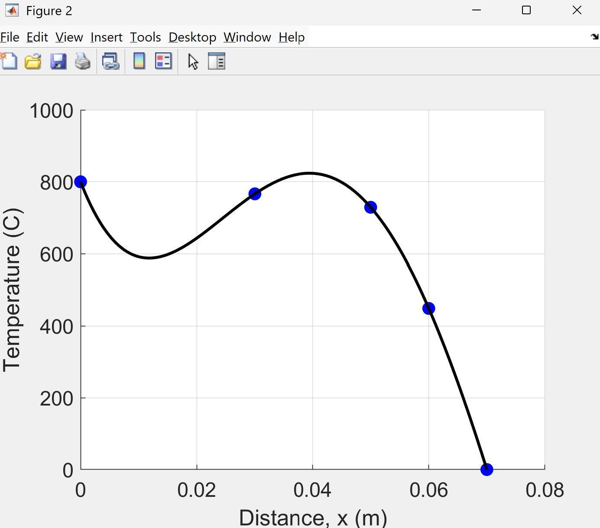

04Computational
MATLAB · Numerical analysis
Computational
Methods
An eight-chapter engineering notebook applying numerical methods to fluids and heat-transfer problems—and checking where computed results deserve trust.
- 97.25%Course project score
- 8Analysis chapters
- MATLABPrimary tool


A result is not finished when the code runs.
The portfolio connected algorithms to engineering quantities, then compared predictions with experimental behavior.
Plots are used here only when they reveal agreement, error, or sensitivity. The central habit was to document assumptions and interpret residuals rather than treating MATLAB output as proof.